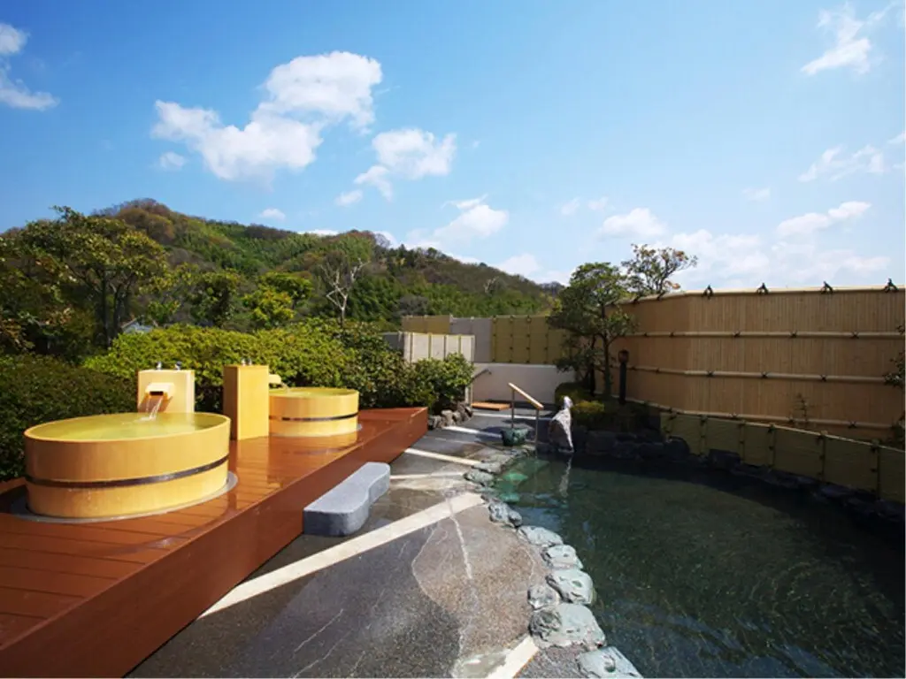
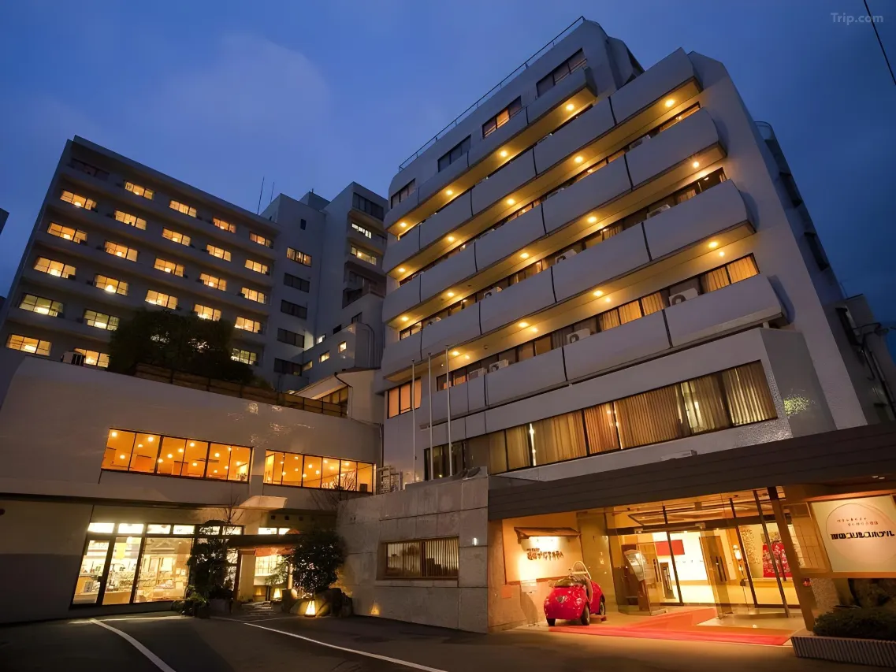
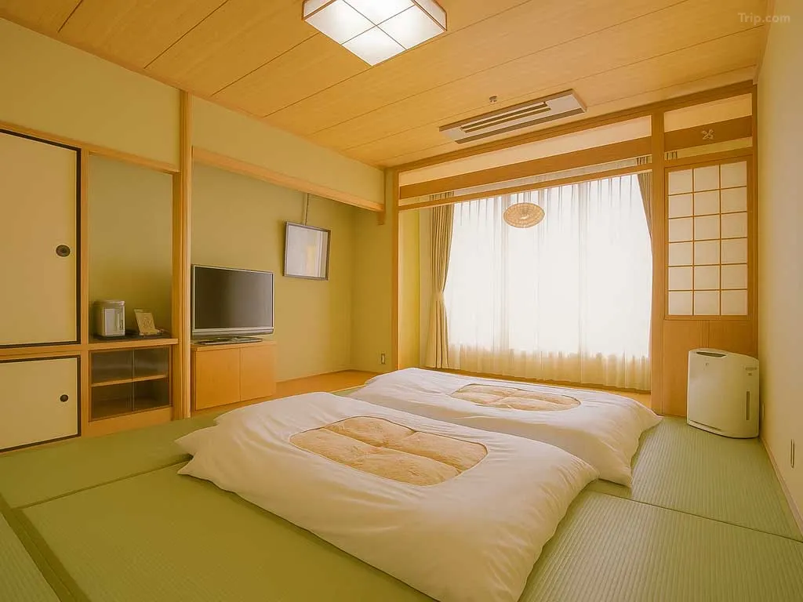
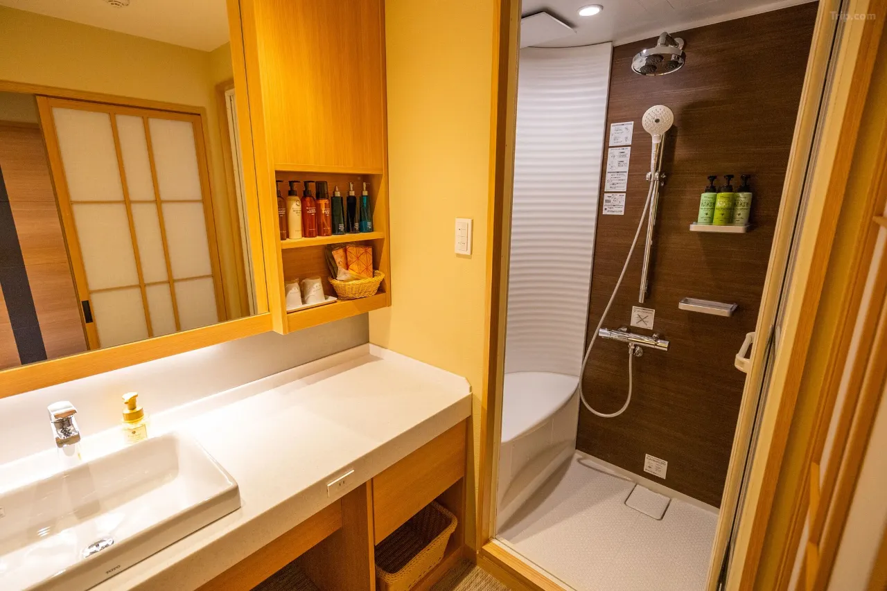
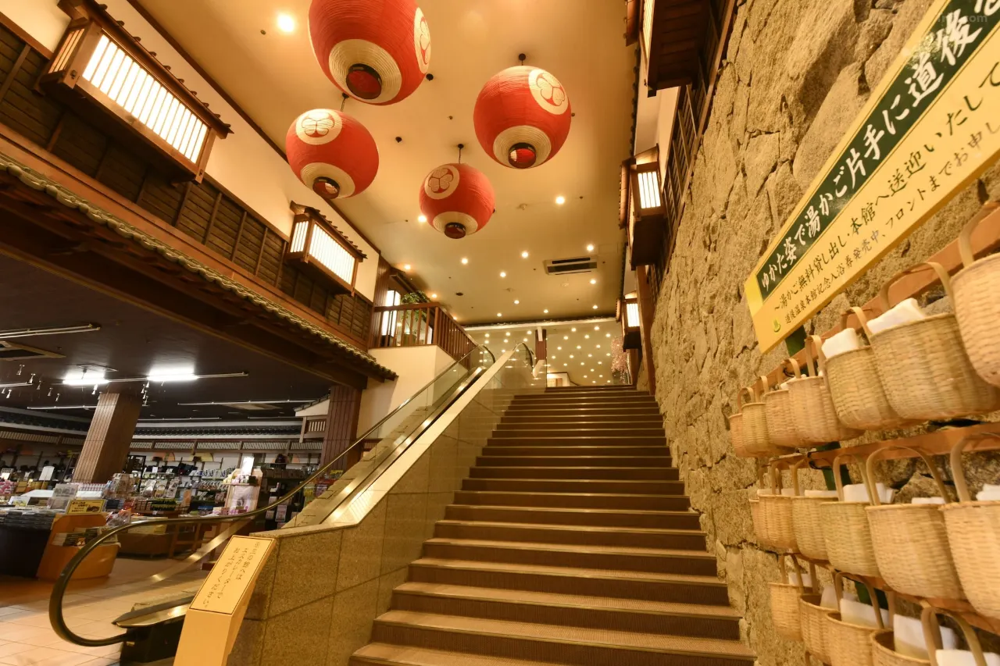
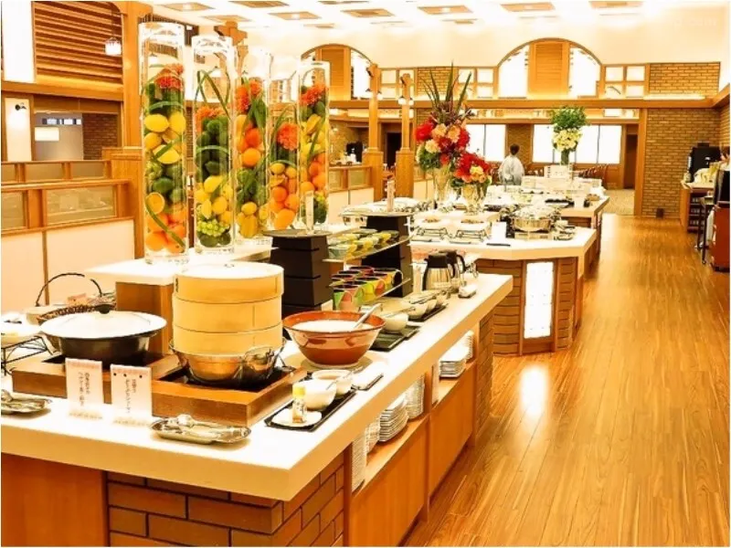
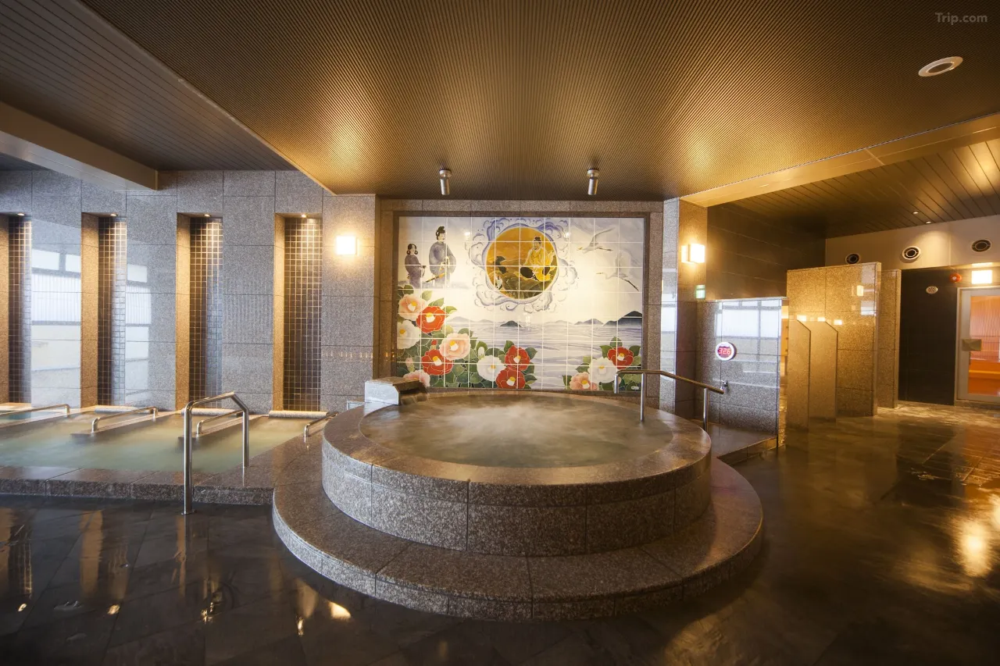

Two minutes on foot from the building that inspired Spirited Away. That is Chaharu's most important piece of information, and it is the reason most of its guests are there. Dogo Onsen Honkan — the 1894 wooden bathhouse at the heart of one of Japan's oldest hot spring towns — is the structure that Hayao Miyazaki drew from when designing Yubaba's bathhouse, and it sits directly across the narrow shopping arcade from Chaharu's entrance. You can see it from the ryokan. You can walk to it in less time than it takes to put on your yukata.
But Chaharu is not simply a hotel near a famous building. It is the finest ryokan in Dogo Onsen — the one with the rooftop open-air bath, the kaiseki restaurant, the rooms designed with the kind of care that makes a stay feel like an event rather than accommodation. For anime pilgrims who have made the journey to Matsuyama to stand in front of the Spirited Away bathhouse, Chaharu is where the pilgrimage actually lives.
Dogo Onsen Honkan: Why You Are Here
Dogo Onsen is not a ryokan. It is a public bathhouse — Japan's oldest, with records of use stretching back 3,000 years, and a National Important Cultural Property designation since 1994. The Honkan building as visitors see it today was rebuilt in 1894 in a style that combines traditional Japanese architecture with the eclectic confidence of Meiji-era design: a three-story wooden structure topped by a watchtower and an egret — the white heron of local legend, the bird whose injured leg was supposedly healed by the spring water, prompting humans to follow. When Miyazaki was designing the bathhouse for Spirited Away, it was this building he returned to repeatedly. The arched windows of the Genroku-no-Yu bath at Sekizenkan are one reference point; the Dogo Honkan's exterior silhouette, its lantern-lit facade at night, and the maze of interior passages are another. The animation team has confirmed both sources.

The Honkan offers two bathing areas: Kami no Yu (Bath of the Gods) and the more intimate Tama no Yu (Bath of the Spirits). Various ticket tiers provide different levels of access — from a basic bath entry to plans that include a private tatami rest room on the upper floors, tea and dango, and a guided tour of the Yushinden, the imperial suite constructed for the Emperor's visits in 1899 and used for the last time in 1952. The Honkan closed for major restoration work in 2019 and fully reopened in July 2024 — guests arriving now experience the building at its most complete in years. Go at dusk, when the lanterns come on and the building's lit exterior most closely resembles its animated counterpart. Budget at least 90 minutes for the full experience.
The Rooftop: Dogo's First Open-Air Bath
Chaharu holds a specific distinction in Dogo Onsen: it was the first ryokan in the area to build a rooftop open-air bath. The 10th floor — the highest accessible point in the immediate Dogo neighborhood — houses two separate baths under open sky. The men's bath, Hoshi no Yu (Bath of Stars), faces south toward Matsuyama Castle and north toward Mount Ishizuchi, Shikoku's highest peak. The women's bath, Tsuki no Yu (Bath of the Moon), offers equally expansive sky views. Both are fed directly from the Dogo Onsen Honkan spring source — the same water, the same mineral composition, the same sodium-calcium chloride sulfate that the spring literature has described as beneficial for joint pain, fatigue, muscle aches, and digestive issues for centuries.

On weekend evenings, the women's bath adds a rose bath from 5 PM to 10 PM — a feature unique to Chaharu in the Dogo area. The indoor panoramic bath on the lower floor accommodates up to 60 guests and provides an alternative when the rooftop is busy or the weather discourages open-air bathing. The capacity numbers matter: unlike some ryokan where the baths are intimate but crowded during peak periods, Chaharu's facilities are designed for the volume of guests the property actually receives.
The Rooms: Four Categories, One Standard
Chaharu has 66 rooms across four configurations. Japanese-Style Rooms feature tatami floors with the low chabudai table and zabuton cushions that define traditional ryokan space — unhurried, floor-level, designed for the pace of an onsen stay rather than a transit hotel. Japanese Modern Rooms blend wood floors with tatami sections, splitting the difference between Western convenience and Japanese atmosphere. Western-Style Rooms provide the familiar raised bed setup for guests who prefer it without sacrificing the ryokan's overall character. And then there is the Executive Suite — a collaboration with Finnish designer Fujiwo Ishimoto, formerly of Marimekko, featuring his signature textile patterns on the cushion covers and mugs, creating a room that reads as a cultural conversation between Japanese onsen tradition and Scandinavian modernist sensibility.
All rooms are non-smoking. All come equipped with yukata, bath sets, toiletries, refrigerators, and tea makers. The private bathrooms feature bathtubs with onsen water available in select room categories — check specific room types when booking if an in-room onsen is a priority. Note that guests with tattoos may not be permitted to use the public bath facilities, a policy consistent with most traditional onsen properties in Japan.
Dining: Kaiseki and the Buffet
Chaharu operates two distinct dining venues. Saryo Hanakoji on the second floor is the kaiseki restaurant — modern Japanese multi-course cuisine built around seasonal Ehime ingredients, served in a contemporary Japanese room setting with the pacing and presentation that kaiseki demands. This is the dinner option for guests who want the full ryokan dining experience. La Cuisine Japonaise Hari on the third floor offers a dinner buffet that fuses Japanese and Western preparations — a broader selection served in a more social atmosphere. Breakfast at Hari has been consistently praised across multiple review platforms as one of the better hotel breakfasts available in the Matsuyama area, with a range that spans traditional Japanese morning dishes and Western options.
The dining times matter operationally: guests must check in by 6 PM to be eligible for dinner service. If arriving later, confirm with the property in advance or plan to eat in the Dogo Onsen shopping arcade, which offers its own range of local restaurants and street food — including Matsuyama's notable jakoten (fried fish paste tempura) available from the arcade stalls directly between Chaharu and the Honkan.
Location: Dogo Onsen Town
Dogo Onsen is a neighborhood of Matsuyama — accessible by tram from central Matsuyama Station in approximately 25 minutes, with the Dogo Onsen tram terminus a five-minute walk from Chaharu. The onsen town itself is compact and navigable entirely on foot: the 250-meter covered shopping arcade connecting the tram station to the Honkan passes directly by the ryokan entrance, lined with shops selling Ehime specialties, ceramics, and omiyage. Isaniwa Shrine — a striking vermilion structure on the hill above the Honkan — is a three-minute walk. Dogo Park, a former castle site now known for its cherry blossoms, is five minutes on foot. Matsuyama Castle, visible from Chaharu's rooftop bath, is accessible by ropeway from central Matsuyama.
For travelers building a wider Shikoku itinerary around the Dogo pilgrimage, Matsuyama functions as a practical hub. Ferry connections to Hiroshima operate from nearby Matsuyama Port, and the Yosan Line connects to Takamatsu and the Setouchi island art region — making Chaharu a viable base for multi-day exploration beyond the onsen town itself.
Practical Information
- Check-in: 3:00 PM Check-out: 11:00 AM
- Dinner deadline: Must check in by 6:00 PM to eat dinner on-site
- Rooms: 66 rooms — Japanese-style, Japanese Modern, Western, Executive Suite (Marimekko collaboration)
- Rooftop baths: Hoshi no Yu (men) + Tsuki no Yu (women) — 10th floor — Dogo's first open-air bath
- Rose bath: Women's rooftop bath — weekends 5–10 PM only
- Hot spring source: Direct from Dogo Onsen Honkan wells
- Dining: Saryo Hanakoji (kaiseki, 2F) · La Cuisine Japonaise Hari (buffet, 3F)
- To Dogo Onsen Honkan: 2-minute walk
- To Dogo Onsen tram station: 5-minute walk
- Tattoo policy: May restrict access to public bath facilities
- Parking: Available on-site (paid)
| Full Name | Chaharu (茶玻琉) |
| Address | 4-4 Dogo Yuzuki-cho, Matsuyama, Ehime 790-0842 |
| Category | Onsen Ryokan |
| Rooms | 66 rooms — Japanese, Japanese Modern, Western, Executive Suite |
| Hot Spring | Dogo Onsen water — rooftop open-air bath + indoor panoramic bath |
| Dining | Saryo Hanakoji (kaiseki) · La Cuisine Japonaise Hari (buffet) |
| To Dogo Onsen Honkan | 2-minute walk — directly across the shopping arcade |
| Nearest Tram | Dogo Onsen Station — 5-minute walk |
| Anime Connection | Adjacent to Dogo Onsen Honkan — Spirited Away bathhouse inspiration |
Photo Gallery

Photo 1
Photo 2
Photo 3'">
Photo 4'">
Photo 5'">
Photo 6'">Two Minutes from the Spirited Away Bathhouse
Book Chaharu — rooftop onsen under the stars, kaiseki in the evening, and the Honkan waiting across the arcade at dawn.